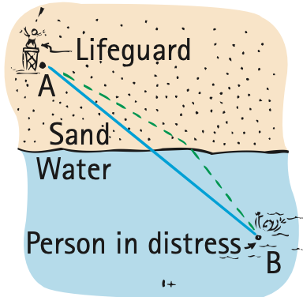
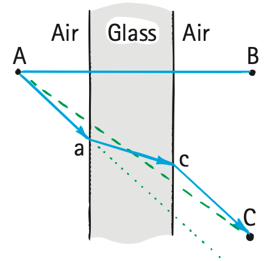
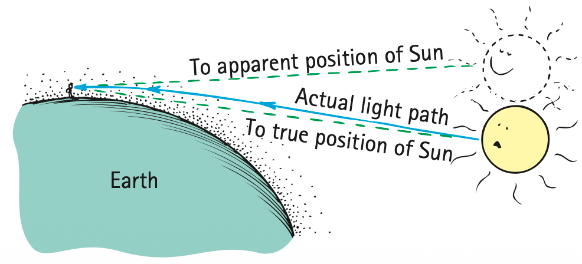

Refraction
Recall from Chapter 26 that the average speed of light is lower through glass and other transparent materials than through empty space. Light travels at different speeds in different materials. It travels at 300,000 km/s in a vacuum, at a slightly lower speed in air, and at about three-fourths that speed in water. In a diamond, light travels at about 40% of its speed in a vacuum. When light bends in passing obliquely from one medium to another, we call the process refraction. It is a common observation that a ray of light bends and takes a longer path when it encounters glass or water at an oblique angle. But the longer path taken is nonetheless the path that requires the least time. A straight-line path would take a longer time. We can illustrate this with the following situation.

Imagine that you are a lifeguard at a beach and you spot a person in distress in the water. We show the relative positions of you, the shoreline, and the person in distress in Figure 28.13. You are at point A, and the person is at point B. You can run faster than you can swim. Should you travel in a straight line to get to B? A little thought will show that a straight-line path would not be the best choice because, if you instead spent a little bit more time traveling farther on land, you would save a lot more time in swimming a shorter distance in the water. The path of least time is shown by the dashed line, which clearly is not the path of the shortest distance. The amount of bending at the shoreline depends, of course, on how much faster you can run than swim. The situation is similar for a ray of light incident upon a body of water, as shown in Figure 28.14. The angle of incidence is larger than the angle of refraction by an amount that depends on the relative speeds of light in air and in water.

Consider the pane of thick window glass in Figure 28.15. When light goes from point A through the glass to point B, it will go in a straight-line path. In this case, light encounters the glass perpendicularly, and we see that the shortest distance through both air and glass corresponds to the shortest time. But what about light that goes from point A to point C? Will it travel in the straight-line path shown by the dashed line? The answer is no, because if it did so it would be spending more time inside the glass, where light travels more slowly than in air. The light will instead take a less-inclined path through the glass. The time saved by taking the resulting shorter path through the glass more than compensates for the added time required to travel the slightly longer path through the air. The overall path is the path of least time—the quickest path. The result is a parallel displacement of the light beam because the angles in and out are the same. You’ll notice this displacement when you look through a thick pane of glass at an angle. The more your angle of viewing differs from perpendicular, the more pronounced the displacement.

Another example of interest is the prism, in which opposite faces of the glass are not parallel (Figure 28.16). Light that goes from point A to point B will not follow the straight-line path shown by the dashed line because too much time would be spent in the glass. Instead, the light will follow the path shown by the solid line—a path that is a bit longer through the air—and pass through a thinner section of the glass to make its trip to point B. By this reasoning, one might think that the light should take a path closer to the upper vertex of the prism and seek the minimum thickness of glass. But if it did, the extra distance through the air would result in an overall longer time of travel. The quickest path followed is the path of least time.


It is interesting to note that a “properly curved prism” will provide many paths of equal time from a point A on one side to a point B on the opposite side (Figure 28.17). The curve decreases the thickness of the glass correctly to compensate for the extra distances light travels to points higher on the surface. For appropriate positions of A and B and for the appropriate curve on the surfaces of this modified prism, all light paths are of exactly equal time. In this case, all the light from A that is incident on the glass surface is focused on point B. We see that this shape is simply the upper half of a converging lens (Figure 28.18, and treated in more detail later in this chapter).
Whenever we watch a sunset, we see the Sun for several minutes after it has sunk below the horizon. Earth’s atmosphere is thin at the top and dense at the bottom. Since light travels faster in thin air than it does in dense air, light from the Sun can reach us more quickly if, instead of traveling in a straight line, it avoids the denser air by taking a higher and longer path to penetrate the atmosphere at a steeper tilt (Figure 28.19). Since the density of the atmosphere changes gradually, the light path bends gradually to produce a curved path. Interestingly, this path of least time provides us with a slightly longer period of daylight than if the light traveled without bending. Furthermore, when the Sun (or Moon) is near the horizon, the rays from the lower edge are bent more than the rays from the upper edge. This produces a shortening of the vertical diameter, causing the Sun to appear pumpkin shaped (Figure 28.20).

Figure 28.20 was omitted because no matching captured image was supplied.
Index of Refraction
Light slows when it enters a transparent medium. How much the speed of light differs from its speed in a vacuum is given by the index of refraction, n, of the material:
n = speed of light in vacuum / speed of light in material
For example, the speed of light in a diamond is 124,000 km/s, so the index of refraction for diamond is
n = 300,000 km/s / 124,000 km/s = 2.42
For a vacuum, n = 1.
For optical crown glass, common in eyeglasses, n is 1.52, which means light slows from speed c in air to speed c/n = c/1.52 = 0.66c. The greater the n, the greater the bending of light in the lens, which translates into less lens thickness. The n of high-index plastic lenses reaches 1.76, so light slows more and bends more, and lenses can be made thinner—good news for nearsighted people who want thinner eyeglasses. And what about the speed of light when it exits a lens? That’s right—back up to nearly c, light’s usual speed in air.
The quantitative law of refraction, called Snell’s law, is credited to W. Snell, a 17th-century Dutch astronomer and mathematician:
n1 sin θ1 = n2 sin θ2
where n1 and n2 are the indices of refraction of the media on either side of the surface and θ1 and θ2 are the respective angles of incidence and refraction. If three of these values are known, the fourth can be calculated from this relationship. Perhaps in the lab part of your course you’ll make use of Snell’s law.

Mirage
We are all familiar with the mirage we sometimes see while driving on a hot road. The distant road appears to be wet, but when we get there, the road is dry. Why is this so? The air is very hot just above the road surface and cooler above. Light travels faster through the thinner hot air than through the denser cool air above. So light, instead of coming to us from the sky in straight lines, also has least-time paths by which it curves down into the hotter region near the road for a while before it reaches our eyes (Figure 28.22). Where we are seeing “wetness,” we are really seeing the sky. A mirage is not, as many people mistakenly believe, a “trick of the mind.” A mirage is formed by real light and can be photographed, as shown in Figure 28.23.

Figure 28.23 was omitted because no matching captured image was supplied.
When we look at an object over a hot stove or over hot pavement, we see a wavy, shimmering effect. This is due to the various least-time paths of light as it passes through varying temperatures and therefore varying densities of air. The twinkling of stars results from similar phenomena in the sky, where light passes through unstable layers in the atmosphere.
In the foregoing examples, how does light seemingly “know” what conditions exist and what compensations a least-time path requires? When approaching window glass, a prism, or a lens at an angle, how does light know to travel a bit farther in air to save time in taking a shorter path through the glass? How does light from the Sun know to travel above the atmosphere an extra distance before taking a shortcut through the denser air to save time? How does sky light above know that it can reach us in minimum time if it dips toward a hot road before tilting upward to our eyes? The principle of least time appears to be noncausal that light has a mind of its own and can “sense” all the possible paths, calculate the time for each, and choose the one that requires the least time. Is this the case? As intriguing as all this may seem, there is a simpler explanation that doesn’t assign foresight to light: Refraction is simply a consequence of light having different average speeds in different media.